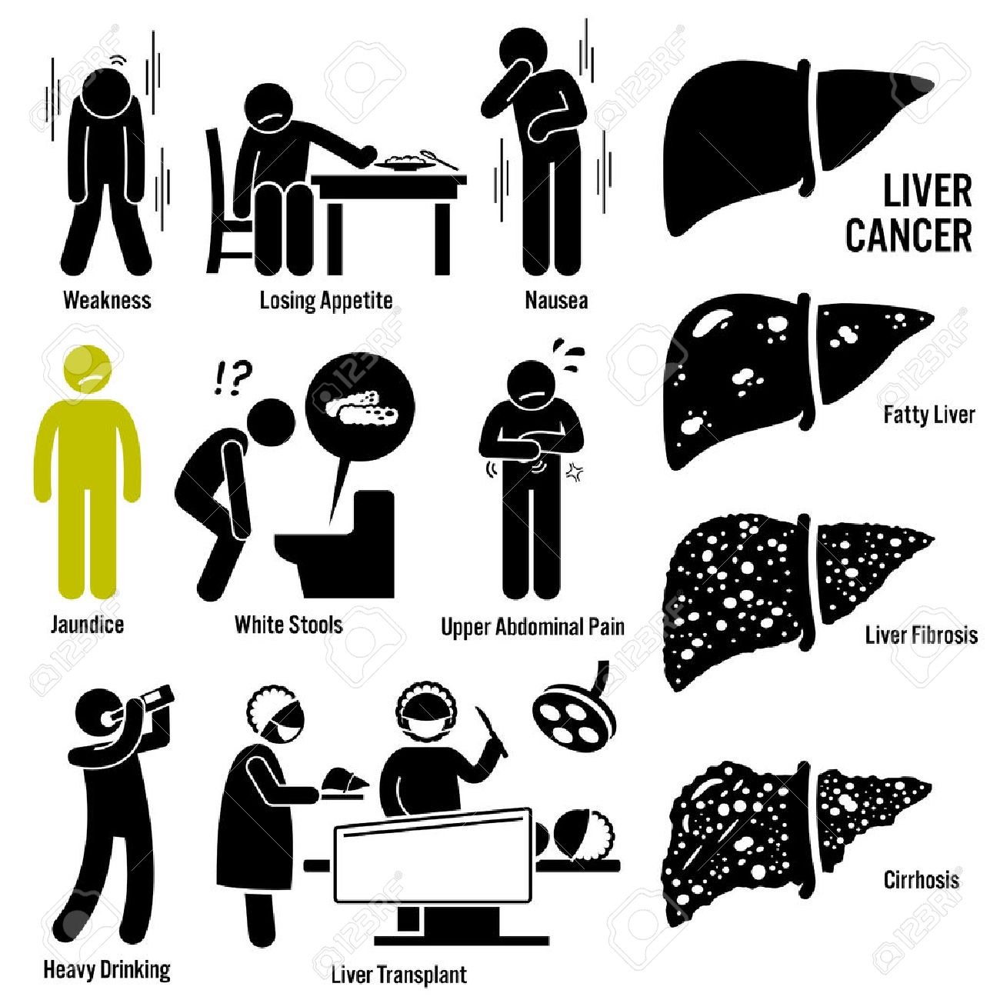

Common symptoms of hepatitis are -
If you have infectious forms of hepatitis that are chronic, like hepatitis B and C, you may not have symptoms in the beginning. Symptoms may not occur until the damage affects liver function.
Signs and symptoms of acute hepatitis appear quickly. They include:-
* fatigue
* flu-like symptoms
* dark urine
* pale stool
*abdominal pain
*loss of appetite
*unexplained weight loss
*yellow skin and eyes, which may be signs of jaundice